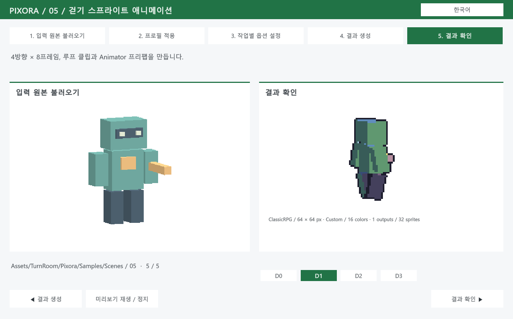
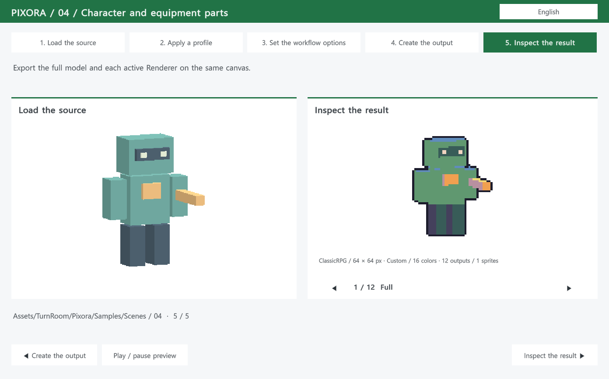
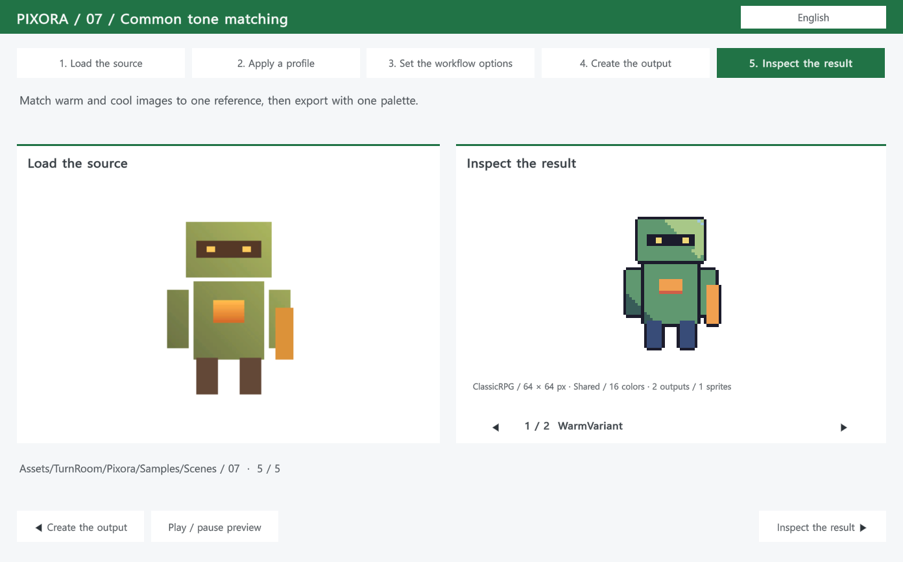
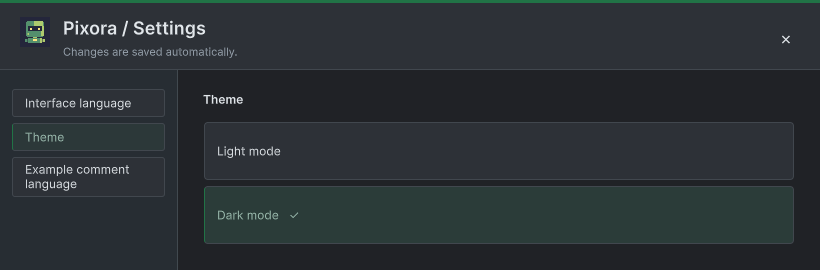

Tracefolio REPORTS & ISSUES
Tracefolio REPORTS & ISSUESPixora 실제 예제 씬 10개와 단계별 재생
완료기존 설명 창을 유지하면서 Game 뷰 안에서 다섯 단계를 진행하는 실제 예제 씬 10개를 구성하고, 새 출력과 언어·방향·장비 선택을 실행 검증했습니다.
작업 결과
실제 Unity 씬 10개와 생성 산출물을 구성했습니다. 아래 화면은 05-Animation을 Play한 상태이며, 한국어 단계 선택과 D1 방향의 실제 스프라이트를 보여줍니다.

씬의 Generate 단계는 에디터에서 실제 변환한 산출물을 보여줍니다. 플레이어 안에서 에디터 변환을 실행하는 기능은 아닙니다.
변경 내용
적용 내용
Samples/Scenes에 이미지·팔레트·3D 촬영·부위 분리·걷기·기존 시트·톤·장비·알파·배치 프로필의 10개 씬을 배치했습니다. 각 씬에는 Input → Profile → Options → Generate → Result의 다섯 단계 오브젝트가 있습니다.
재생 코드는 Pixora.Samples.Runtime, 생성기와 기존 예제 코드는 Pixora.Samples.Editor로 분리했습니다. 코어는 샘플 어셈블리를 직접 참조하지 않습니다. 기존 설명 창은 유지하고 TurnRoom > Pixora > Sample Scenes로 실제 씬을 엽니다.
라이트·다크 전환은 Settings > Theme에만 남겼습니다. 제목줄과 보조 창의 테마 버튼을 제거했고 공통 카드 툴팁을 적용했습니다. 장비 출력은 긴 이름이 겹치지 않도록 좌우 선택으로 바꿨습니다.
검증
- Windows / Unity 6000.0.83f1에서 실제 씬 10개 × 다섯 단계의 네이티브 클릭 50회가 통과했습니다.
- 부위 출력 12개 선택, 애니메이션 프레임 0→4 진행, D1 방향 선택을 실제 입력으로 확인했습니다.
- 05-Animation의 9개 언어 선택과 실제 캡처, Studio와 기존 설명 창의 9개 언어 캡처를 수행했습니다.
- 새 PNG 32개 모두 투명 픽셀 제외 색상 수, 팔레트 포함과 격자를 검사했습니다.
- 샘플 폴더 제거 후에도 Pixora·DataTable 코어가 컴파일됐고, 최종 패키지 재설치로 샘플을 복구했습니다.
- 9개 오프라인 가이드의 99개 장·90개 코드 예시와 언어 이동을 Node VM으로 검사했습니다. 브라우저 레이아웃 검사와는 구분합니다.



이번 실행 근거 · 32개 출력 검사 · 실제 씬 사용법
남은 사항
다른 OS·렌더 파이프라인과 독립 플레이어 빌드는 검증하지 않았습니다. 번역의 독립적인 모국어 감수는 수행하지 않았습니다. 제품 스토어 게시·판매 업데이트는 수행하지 않았습니다.
작업 시간
- 제안 시간: 90–150분. 세 프로젝트를 함께 수행한 통합 작업의 시작 시 제안 시간입니다.
- 실제로 완료된 시간: 통합 구현·검증·프로젝트 푸시·보고서 작성: 2시간 24분 39초. 시작 2026-10-30 14:32:14 KST, 결과 기록 완료 2026-10-30 16:56:54 KST (UTC+09:00). 보고서 공개 게시 확인은 이 기록 생성 이후 별도로 수행합니다.
- XERJ: 사용 — SpreadsheetScreenTip 검색 후보를 활용했습니다. Templete 새 인덱스는 frozen mapping identity 오류로 갱신에 실패해 현재 모체 소스는 rg와 실제 실행으로 대조했습니다. 자동 갱신 활성 여부는 검증하지 않았습니다.